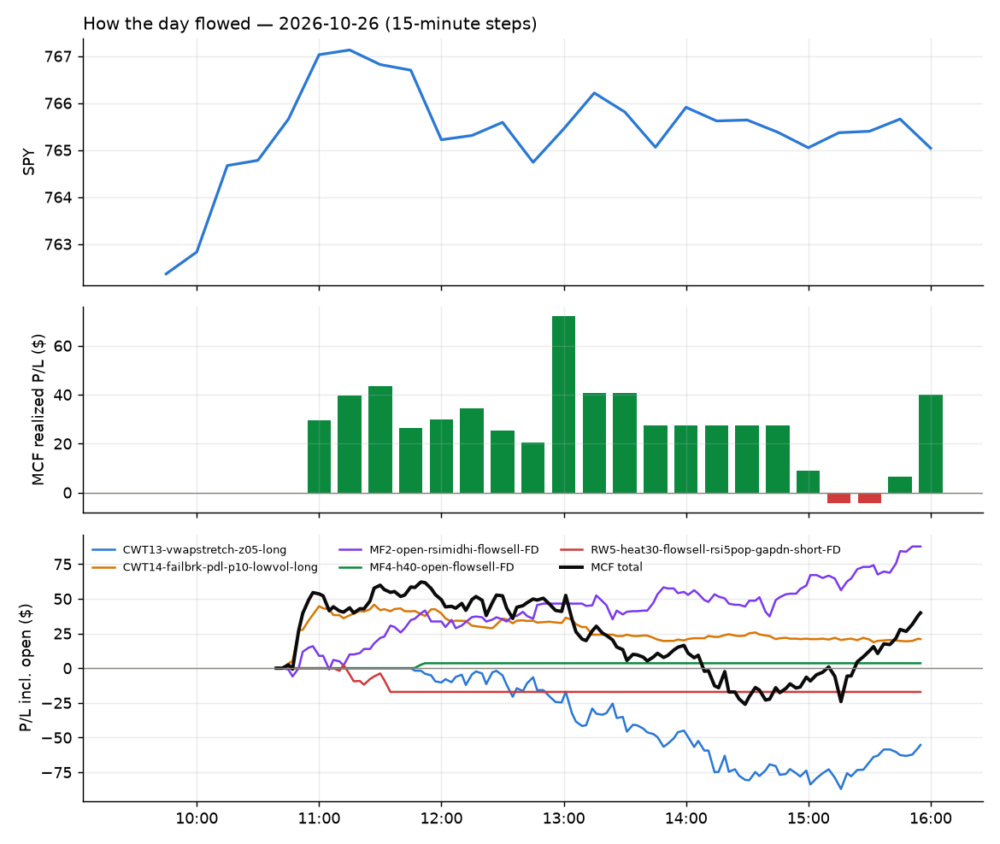
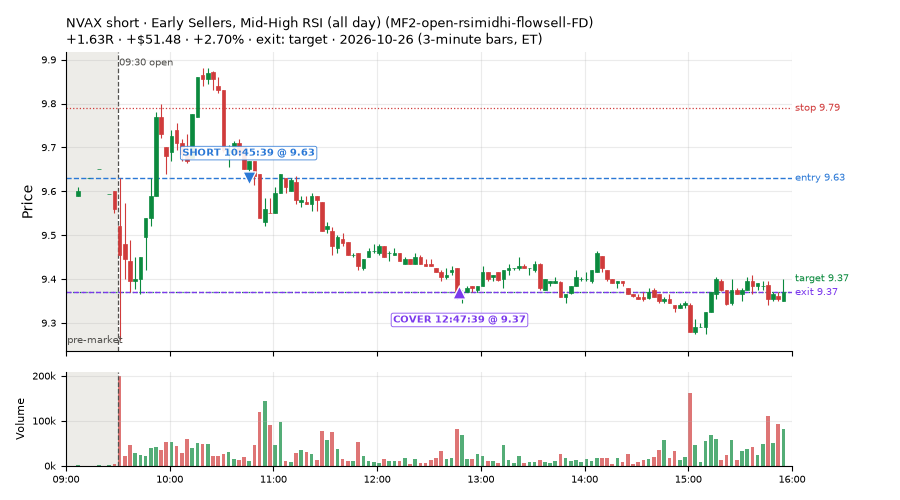
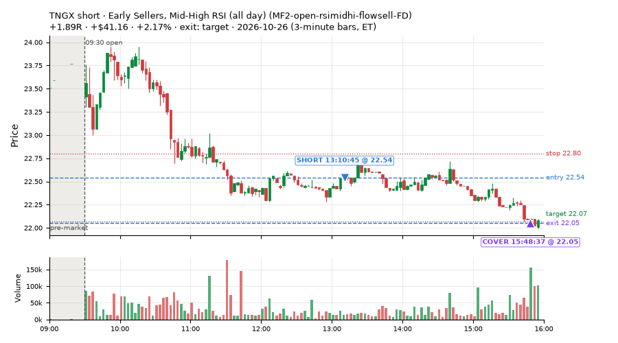
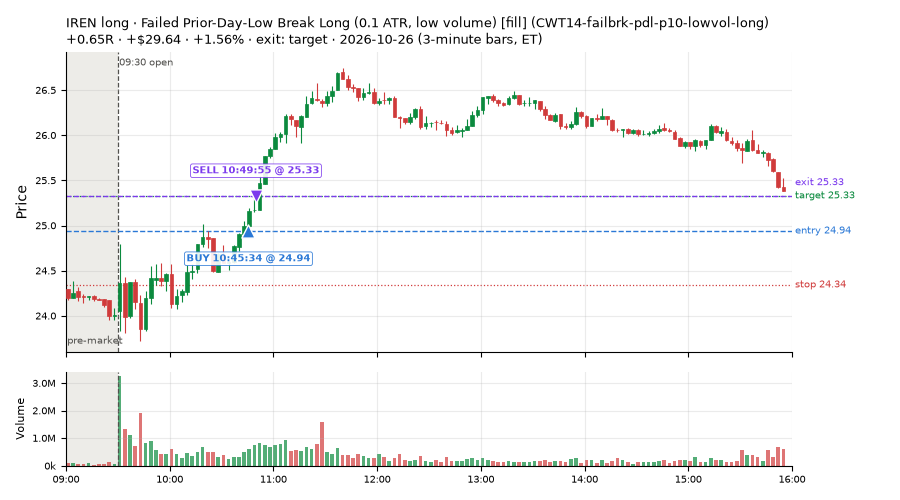
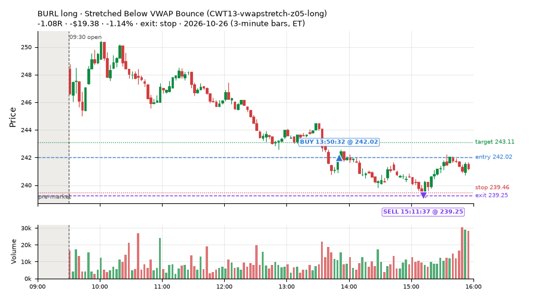
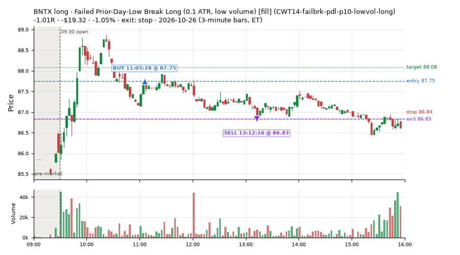
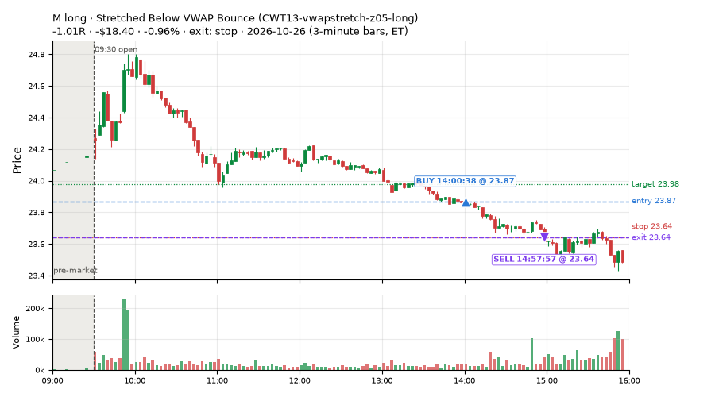
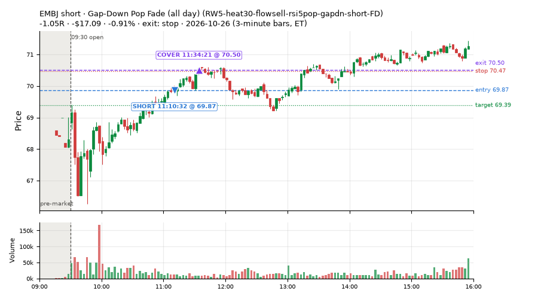
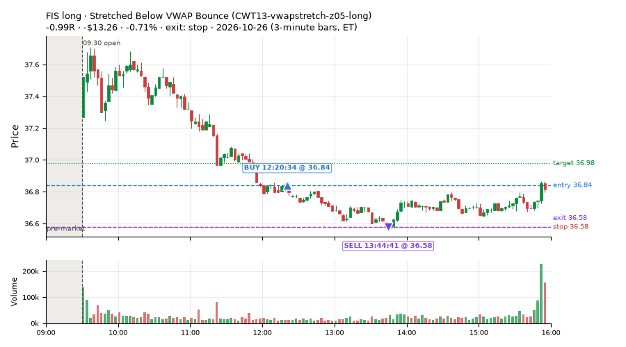

22 trades · win rate 50% · P/L $39.83
PROBATION: no live setup has passed both locked test periods. 10 owner-directed setups added 2026-10-08 (MarcoFlow top 5 + 5 new), untested live. RW6G1 (RW6 + VWAP band guard) added 2026-10-09, probation.

| Symbol | Setup | Side | In | Out | Entry | Exit | Exit reason | % gained | P/L |
|---|---|---|---|---|---|---|---|---|---|
| NVAX | Early Sellers, Mid-High RSI (all day) (MF2-open-rsimidhi-flowsell-FD) | short | 10:45 | 12:47 | 9.63 | 9.37 | target | +2.70% | $51.48 |
| TNGX | Early Sellers, Mid-High RSI (all day) (MF2-open-rsimidhi-flowsell-FD) | short | 13:10 | 15:48 | 22.54 | 22.05 | target | +2.17% | $41.16 |
| IREN | Failed Prior-Day-Low Break Long (0.1 ATR, low volume) [fill] (CWT14-failbrk-pdl-p10-lowvol-long) | long | 10:45 | 10:49 | 24.94 | 25.33 | target | +1.56% | $29.64 |
| Symbol | Setup | Side | In | Out | Entry | Exit | Exit reason | % lost | P/L |
|---|---|---|---|---|---|---|---|---|---|
| BURL | CWT13-vwapstretch-z05-long | long | 13:50 | 15:11 | 242.02 | 239.25 | stop | -1.14% | $-19.38 |
| BNTX | CWT14-failbrk-pdl-p10-lowvol-long | long | 11:05 | 13:12 | 87.75 | 86.83 | stop | -1.05% | $-19.32 |
| M | CWT13-vwapstretch-z05-long | long | 14:00 | 14:57 | 23.87 | 23.64 | stop | -0.96% | $-18.40 |
| EMBJ | RW5-heat30-flowsell-rsi5pop-gapdn-short-FD | short | 11:10 | 11:34 | 69.87 | 70.50 | stop | -0.91% | $-17.09 |
| FIS | CWT13-vwapstretch-z05-long | long | 12:20 | 13:44 | 36.84 | 36.58 | stop | -0.71% | $-13.26 |








Signal to fill: median 1s, 90th percentile 2s (22 trades). Bars close each minute; the order follows the bar close.
Best excursion (MFE): median 0.31R; worst (MAE) median 0.91R. 45% of trades never got +0.25R in our favour; 0 reached +1R and still closed at or below 0.
| Symbol | Setup | Best R | Worst R | Closed R |
|---|---|---|---|---|
| EMBJ | RW5-heat30-flowsell-rsi5pop-gapdn-short-FD | +0.30 | -1.05 | -1.05 |
| BURL | CWT13-vwapstretch-z05-long | +0.21 | -1.08 | -1.08 |
| BNTX | CWT14-failbrk-pdl-p10-lowvol-long | +0.19 | -1.01 | -1.01 |
| FISV | CWT13-vwapstretch-z05-long | +0.16 | -1.06 | -1.03 |
| M | CWT13-vwapstretch-z05-long | +0.04 | -1.01 | -1.01 |
| Entry time | Trades | Win | Avg R | P/L |
|---|---|---|---|---|
| 10:30-11:30 | 7 | 57% | +0.04 | $58.54 |
| 11:30-13:00 | 9 | 44% | -0.37 | $-31.50 |
| 13:00-14:00 | 4 | 50% | +0.20 | $24.81 |
| 14:00-16:00 | 2 | 50% | -0.27 | $-12.02 |
| Setup | Trades | Win | Avg R | Adj R (net of SPY) | P/L |
|---|---|---|---|---|---|
| Stretched Below VWAP Bounce (CWT13-vwapstretch-z05-long) | 11.0 | 45% | -0.38 | -0.36 | $-55.29 |
| Failed Prior-Day-Low Break Long (0.1 ATR, low volume) [fill] (CWT14-failbrk-pdl-p10-lowvol-long) | 6.0 | 50% | -0.11 | -0.10 | $20.95 |
| Early Sellers, Mid-High RSI (all day) (MF2-open-rsimidhi-flowsell-FD) | 3.0 | 67% | +0.85 | +0.83 | $87.69 |
| Early Sellers, Strong Heat (all day) (MF4-h40-open-flowsell-FD) | 1.0 | 100% | +0.50 | +0.09 | $3.57 |
| Gap-Down Pop Fade (all day) (RW5-heat30-flowsell-rsi5pop-gapdn-short-FD) | 1.0 | 0% | -1.05 | -1.12 | $-17.09 |
Market direction (SPY, beta 1) accounted for $1.23 of today's $39.83; the rest ($38.60) came from the setups themselves. Avg R net of SPY: -0.14 (incl. a hedge leg's cost; report only).
12 setups live today. Today: 28 signals, 22 taken, 1 lost because another setup held the symbol (4%). Since 2026-10-06 (15 sessions): 1023 signals, 644 taken, 83 lost to other setups (8%). Peak open positions today 9 of 160 slots. Earnings blackout removed 1023 symbols before scanning.
Simulated playing time (not live): 377 what-if trades of signals not taken, avg +0.03R, 55% winners; of them 83 lost to another setup (avg +0.06R).
Silent: intraday_momentum · Crowded out: MF2-open-rsimidhi-flowsell, MF4-h40-open-flowsell, MF3-open-flowsell-rsi5hi, MF5-flowsell-vwapup-rsi5hi
| Prio | Setup | Today sig / taken | Sessions | Signals / taken / trades | Taken/day | Expected/day | Lost to other setups | Lost to (setup n) | Top skip reasons | SIMULATED: not-taken n / avg R / win | Verdict |
|---|---|---|---|---|---|---|---|---|---|---|---|
| 1 | Gap-Down Pop Fade (all day) RW5-heat30-flowsell-rsi5pop-gapdn-short-FD | 1 / 1 | 7 | 61 / 53 / 53 | 7.57 | 12.79 | 0 | – | spread / quote / size 6, not shortable / shorts off 2 | 8 / -0.23R / 38% | ok 37.9 entries/week |
| 2 | Gap-Down Pop Fade, Heavy Selling (all day) RW3-gapdn-rsi5pop-flowsell-short-FD | 0 / 0 | 7 | 51 / 40 / 40 | 5.71 | 13.59 | 0 | – | spread / quote / size 6, not shortable / shorts off 5 | 11 / +0.23R / 55% | ok 28.6 entries/week |
| 3 | Early Sellers, Mid-High RSI (all day) MF2-open-rsimidhi-flowsell-FD | 3 / 3 | 5 | 38 / 31 / 31 | 6.20 | 10.09 | 4 | RW5-heat30-flowsell-rsi5pop-gapdn-short-FD 4, RW3-gapdn-rsi5pop-flowsell-short-FD 4, MF2-open-rsimidhi-flowsell-FD 4 | symbol held by another setup 4, spread / quote / size 2, not shortable / shorts off 1 | 7 / +0.97R / 71% | ok 31.0 entries/week |
| 4 | Early Sellers, Strong Heat (all day) MF4-h40-open-flowsell-FD | 1 / 1 | 5 | 45 / 25 / 25 | 5.00 | 16.45 | 4 | RW5-heat30-flowsell-rsi5pop-gapdn-short-FD 4, RW3-gapdn-rsi5pop-flowsell-short-FD 4, MF2-open-rsimidhi-flowsell-FD 3 | not shortable / shorts off 9, spread / quote / size 7, symbol held by another setup 4 | 20 / +0.12R / 75% | ok 25.0 entries/week |
| 5 | RSI Collapse Dip Buy (all day) ST7-rsi50dn-long-pm-t1s1-FD | 0 / 0 | 1 | 0 / 0 / 0 | 0.00 | 2.17 | 0 | – | – | 0 / – | quiet - wait no signals yet; only ~2.2 expected so far |
| 6 | Big Gainer Dip-and-Pop NS1-rsidip-rsi5pop-long | 0 / 0 | 13 | 10 / 8 / 8 | 0.62 | 0.92 | 0 | – | spread / quote / size 2 | 2 / +0.39R / 100% | slow 3.1 entries/week; ~20 weeks to 60 trades |
| 7 | Early Sellers, Mid-High RSI MF2-open-rsimidhi-flowsell | 1 / 0 | 13 | 12 / 4 / 4 | 0.31 | 1.30 | 3 | MF2-open-rsimidhi-flowsell-FD 3 | symbol held by another setup 3, spread / quote / size 3, not shortable / shorts off 2 | 8 / +0.00R / 38% | crowded-out 3 of 12 signals (25%) lost to setups already holding the symbol |
| 8 | Big Loser Flush Buy NS5-sma50-flush-oversold-long | 0 / 0 | 13 | 16 / 14 / 14 | 1.08 | 2.41 | 0 | – | spread / quote / size 2 | 2 / +0.85R / 100% | slow 5.4 entries/week; ~11 weeks to 60 trades |
| 9 | Afternoon VWAP Reclaim Fade NS4-pm-vwap-reclaim-oversold-short | 2 / 0 | 13 | 25 / 19 / 19 | 1.46 | 3.05 | 0 | – | not shortable / shorts off 4, spread / quote / size 2 | 6 / -0.27R / 33% | slow 7.3 entries/week; ~8 weeks to 60 trades |
| 10 | Early Sellers, Strong Heat MF4-h40-open-flowsell | 0 / 0 | 13 | 58 / 21 / 21 | 1.62 | 7.24 | 17 | MF4-h40-open-flowsell-FD 12, MF3-open-flowsell-rsi5hi-FD 4, MF3-open-flowsell-rsi5hi 3 | symbol held by another setup 17, not shortable / shorts off 10, spread / quote / size 10 | 37 / -0.00R / 65% | crowded-out 17 of 58 signals (29%) lost to setups already holding the symbol |
| 11 | Stretched Below VWAP Bounce CWT13-vwapstretch-z05-long | 12 / 11 | 1 | 12 / 11 / 11 | 11.00 | – | 0 | – | spread / quote / size 1 | 1 / -1.05R / 0% | ok 55.0 entries/week |
| 12 | Failed Prior-Day-Low Break Long (0.1 ATR, low volume) [fill] CWT14-failbrk-pdl-p10-lowvol-long | 8 / 6 | 4 | 60 / 44 / 44 | 11.00 | – | 0 | – | spread / quote / size 15, price through stop/target 1 | 16 / -0.16R / 62% | ok 55.0 entries/week |
Every trade is attached as a CSV you can open and edit in Excel or Google Sheets. Live page: https://misiti15.github.io/MCF/live/